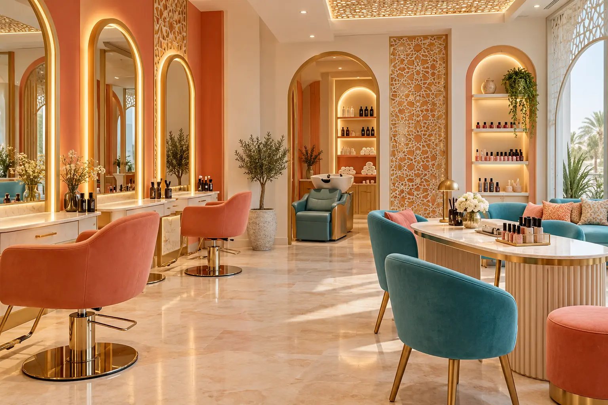

01
Haircare
Styling, treatments and colouring appear in the salon’s public service listings.
A vibrant independent concept that brings the salon’s published hair, nail, skin and makeup services into one easy, mobile-first home.

Public business listings group the salon’s offer around haircare, nail care, facials and skincare, makeup, threading and hair removal. Contact the salon to confirm availability.
Styling, treatments and colouring appear in the salon’s public service listings.
Manicure, pedicure, facial and skincare categories are publicly listed.
Makeup, threading, eyebrow and eyelash services are also listed publicly.
Location was checked on Google Maps and contact details were cross-checked with current public directories on 9 October 2026. Hours may change.
The Google Maps profile places it in Al Hamidiya 1, near Nesto Hypermarket Al Hamidiya in Ajman.
Call or use the published mobile number on WhatsApp before visiting.
No. This is an independent proposal by Amjad Dannan and is not endorsed by the business.
Call the salon or open directions to confirm current details.
The image is AI-generated for illustration and is not a photograph of the salon or its work. This page does not collect bookings, payments or personal data.